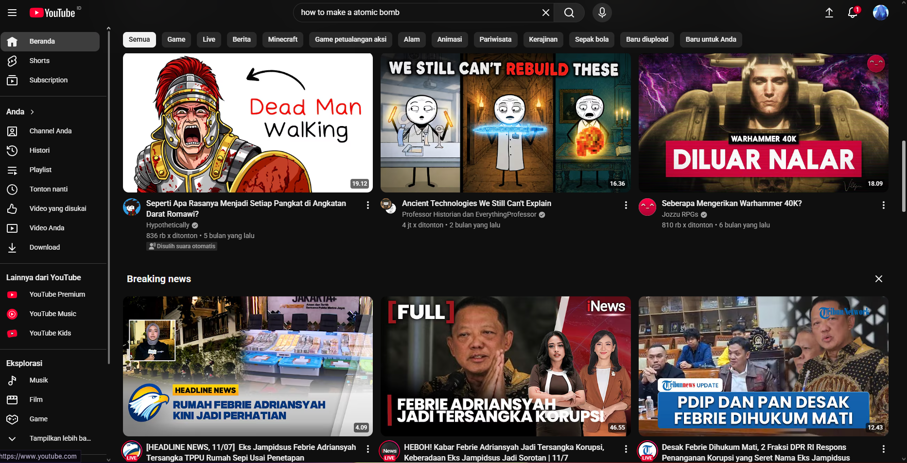
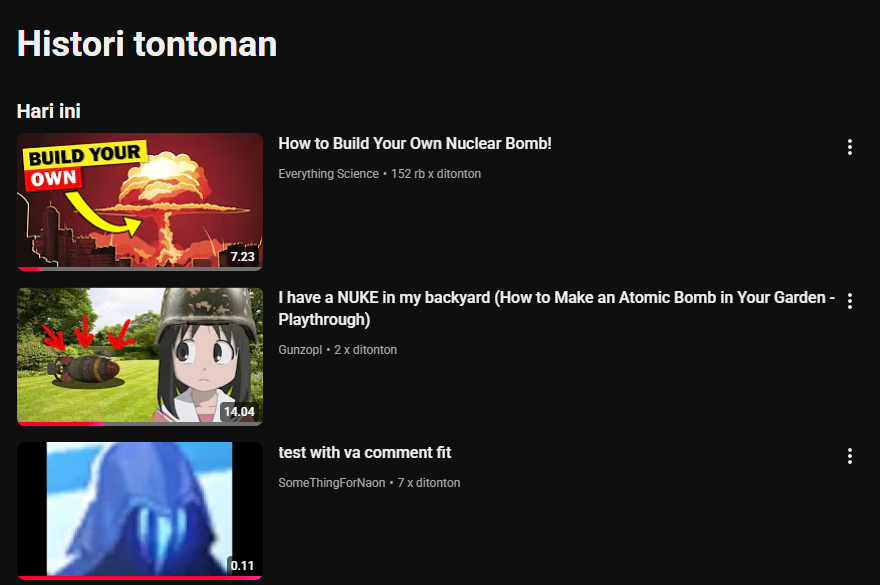
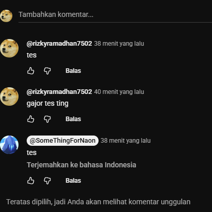
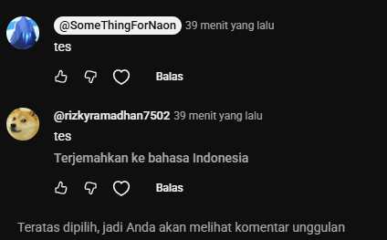

Analisis sistemik optimasi performa Beranda (Max-Heap), manajemen Histori Tontonan pengguna (Stack), serta mekanisme filtrasi dan Sensor Komentar Toksik (Linear Search) secara dinamis.
Aditya Pratama
Bagus Setiawan
Citra Lestari
Dian Nugraha
Fajar Ramadan
Beroperasi menggunakan model antrean prioritas Priority Queue (Max-Heap). Menjamin video dengan bobot skor personalisasi tertinggi teratas di layar Anda.
Mengadopsi pola susunan tumpukan Stack (LIFO). Aktivitas menonton terbaru akan diletakkan di puncak tumpukan agar waktu akses/penghapusan instan.
Menggunakan perpaduan Linear Search & String Matching. Membandingkan kata demi kata input komentar dengan database daftar hitam kotor (*blacklist*) secara presisi.
Bagaimana YouTube menyusun antrean konten terbaik yang paling relevan dengan ketertarikan Anda dalam hitungan milidetik secara dinamis.
Priority Queue (Antrean Prioritas): Struktur antrean di mana setiap elemen memiliki bobot kepentingan atau prioritas tertentu.
Berbeda dengan antrean konvensional (FIFO), elemen dengan skor prioritas paling tinggi dijamin akan diekstrak pertama kali saat dipanggil.
Max-Heap: Struktur data pohon biner lengkap (*complete binary tree*) yang memenuhi kondisi bahwa nilai kunci dari node induk selalu lebih besar atau sama dengan nilai kunci anaknya.
Konstruksi ini sangat efisien dalam mengambil elemen maksimal secara instan, menghemat siklus prosesor server secara signifikan.
Saat memuat halaman awal, YouTube menjalankan model Machine Learning untuk menghitung skor rekomendasi personalisasi pengguna. Video dengan skor tertinggi hasil komparasi ditarik dari *root node* Max-Heap untuk langsung dipajang di urutan teratas layar.
Properti struktur data ini memastikan performa optimal yang konstan meskipun sistem menangani miliaran metadata video global secara real-time.

Melacak perjalanan tontonan pengguna. Menata riwayat aktivitas terkini di posisi paling terdepan menggunakan logika struktur tumpukan cepat.
Stack (Tumpukan): Struktur data linier di mana penambahan atau pengurangan elemen baru hanya dapat dilakukan pada satu ujung terminal tunggal yang disebut Top.
Operasi dasar tumpukan meliputi push() untuk menambahkan data ke puncak tumpukan, dan pop() untuk mengeluarkan data teratas.
LIFO (Last In, First Out): Elemen terakhir yang dimasukkan ke dalam struktur data akan menjadi objek pertama yang dikeluarkan atau dimanipulasi.
Saat Anda menonton video baru, YouTube mendorong (*push*) judul video tersebut ke puncak riwayat, menggeser item yang lama ke bawah.
Halaman riwayat tontonan YouTube menampilkan kronologi terbalik dari konten yang baru saja Anda tonton. Pola LIFO dari Stack sangat ideal untuk kebutuhan ini.
Penghapusan riwayat aktivitas tontonan terakhir (operasi pop()) berjalan dalam waktu konstan yang mengoptimalkan daya komputasi perangkat klien secara langsung.

// Operasi Push saat video ditonton
historyTontonan.push(videoDipilih.judul);
// Operasi Pop saat hapus histori terakhir
String videoDihapus = historyTontonan.pop();Menjaga komunitas interaktif yang ramah. Menyaring dan menyensor kata-kata toksik, kasar, dan spam sebelum diterbitkan ke publik.
Pencarian Linear: Metode pencarian sekuensial yang melintasi satu per satu elemen dari suatu daftar data dari indeks awal hingga akhir.
Sistem akan menguji baris komentar masukan pengguna terhadap setiap kata kasar terlarang yang terdaftar di database blacklist secara bertahap.
String Matching (Kecocokan String): Teknik membandingkan kesamaan pola substring di dalam string induk.
Saat kesamaan pola kata kasar ditemukan, substring tersebut seketika diredam dan diganti dengan tanda bintang penyensoran (*****) menggunakan metode manipulasi string.
Saat menekan tombol kirim komentar, sebelum ulasan tersebut masuk ke database video, filter string secara otomatis memindai konten komentar klien.
Algoritma pencarian mencocokkan kata masukan dengan daftar kata terlarang secara real-time. Hal ini menjaga kenyamanan platform dari bahaya konten perundungan.


| Fitur Utama | Struktur Data | Aksi Operasi Utama | Kompleksitas Waktu (Big-O) | Deskripsi Operasi Performa |
|---|---|---|---|---|
| Beranda Rekomendasi | Priority Queue (Max-Heap) | Insert / Poll Max | O(log N) |
Menjaga urutan ranking bobot video secara dinamis saat data bertambah. |
| Riwayat Tontonan | Stack (LIFO / Array) | Push / Pop Element | O(1) |
Operasi insert atau delete tontonan terkini instan karena selalu di puncak. |
| Sensor Komentar | Sequential Array / List | Linear String Matching | O(K × M) |
Menelusuri kesamaan kalimat komentar dengan panjang kata blacklist. |
Kelompok 5 Struktur Data Rekomendasi & Keamanan Konten: Dengan menerapkan arsitektur Max-Heap untuk beranda yang adaptif dan cepat, Stack LIFO untuk manipulasi riwayat tontonan yang responsif, serta penyaringan Linear String Matching untuk menekan interaksi berbahaya di kolom ulasan, YouTube sukses menghadirkan pengalaman interaktif, aman, dan berkualitas tinggi bagi miliaran penggunanya di seluruh penjuru dunia.
Presentasi Selesai. Silakan ajukan pertanyaan atau tanggapan terkait implementasi struktur data sistem kami.
Kelompok 5 - Struktur Data
github.com/kelompok5-datastruct | admin@kelompok5.dev